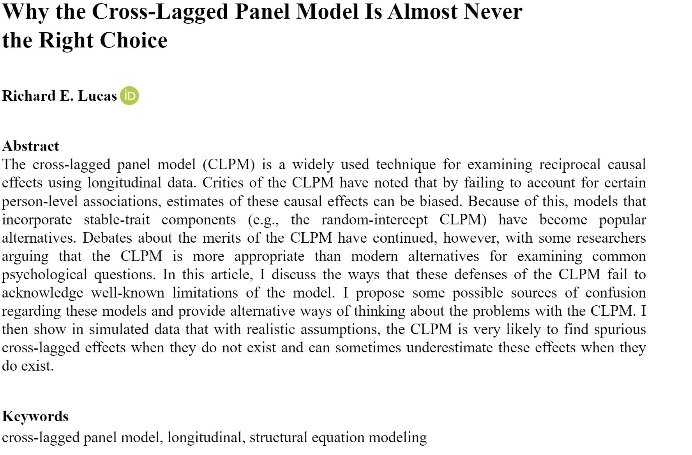

Today’s aims
- Define cross-lagged models
- Observed variables
- Latent variables
- Multiple Indicators
- Covariates
Autoregressive Model

This autoregressive model was initially developed by Guttman in 1954 as a general concept of simplex model for longitudinal data. This model provides us with information of growth between consecutive time points. Adjacent time points are lag 1 paths and as the number of steps increases so does the lag. For example Reading1 and Reading3 are lag 2.
Autoregressive Model
The simplex model assumes that all lag 1 correlations are of the same magnitude. Furthermore, lag 2 correlation is the product of the two coefficients that link the two measurements. So, if our lag 1 correlation is 0.8 then the correlation between Reading1 and Reading3 should be 0.8*0.8=0.64.
Autoregressive Model
If you picture a correlation matrix for the above model how do you expect the correlation values to behave?
What can you infer from the model above?
Does it contain means structure?
Can you spot a weakness of the above mode? (The Quasi-Simplex Model)
The Quasi-Simplex Model
How many observed variables do we have per latent variable?
Can this model be identified?
For the Quasi-Simplex Model first factor variance is constraint to be 1
For the Quasi-Simplex Model the residual variance for the first and last occurrence are constraint to be 0.
If you are using similar models to the Simplex Model you can use constraints that fit your measurements. For example, we can assume that the variances of all error terms are equal. Another approach would be to fix the factor loadings from and to each observed reading score to 1.
Continued …

What is a cross-lagged model?

It is often the case that our hypothesis will include a causal relationship between two variables, in this case Reading and Writing, where our variables are measured repeatedly, in this case twice. By designing a cross-lagged model we can investigate these relationships across measurement times and for both causal directions.
Cross-lagged model
Reading2 is the repeated measurement of the observed variable Reading1
Writing2 is the repeated measurement of the observed variable Writing1
\(\beta_{R_{2,1}}\) and \(\beta_{W_{2,1}}\) are autoregressive paths. These paths will indicate the effects of the past on the future after controlling for the persistence element (think of time as a confound?)
\(\beta_{R_{2}W_{1}}\) and \(\beta_{W_{2}R_{1}}\) are cross-lagged paths. Here we have temporal precendence as well as no assumptions in terms of of directions of effects (Granger Causality).
Cross-lagged model improved
In terms of structural equations: (Can you spot the mistake?)
\(R_2 =\beta_{R_{2,1}}R_1 + \beta_{R_{2}W_{1}}W_1+\zeta_{R_{2}}\)
\(W_2 =\beta_{R_{2,1}}W_1 + \beta_{R_{2}W_{1}}R_1+\zeta_{W_{2}}\)
How many degrees of freedom does this model have?
Which variables are endogenous and which ones are exogenous?
Cross-lagged model hypothesis (es)
Our model will allow us to investigate whether Reading ability can cause Writing ability or whether Writing ability can cause Reading ability. Or ever whether both paths
In that case we may be interested to investigate which of the two causal paths is stronger.
Food for thought
Since this is a cross-lagged model with observed variables what could the impact of measurement error be?
Is there really any benefit from choosing this approach over separate regressions?
You can read more about this at chapters 4 and 5 of Longitudinal Structural Equation Modeling: A Comprehensive Introduction (second edition) by Jason T. Newsom
Longitudinal Structural Equation Modeling | A Comprehensive Introducti (oclc.org)
Before Moving On…
Before moving on to Cross-Lagged Models with Latent Variables let us attempt to code the above model using lavaan and R
Please go to your posit cloud and the project for week 10 code the following model:
Success!!
Assuming you have completed the analysis should you report standardized or unstandardized solutions? (Hint: Think in terms in terms of setting equality constraints on the cross-lagged effects)
Assuming we have succeeded in the above, what changes can we make in our model that would allow us to test whether the cross-lagged effects are significantly different?
Solutions to Observed Variables Measurement Error
The above is sometimes referred to as co-movement. Can you identify a potential weakness of the above model?
We will return to this later on as improving this will be one of the main points of discussion next week.
Cross-Lagged Models with Latent Variables
One of the approaches that reduces the risk of measurement error is the use of latent variables with multiple predictors (it is however possible to have single predictor latent variables in our models as an improvement over observed variables). See conceptual model below as presented in Longitudinal Structural Equation Modeling: A Comprehensive Introduction (second edition) by Jason T. Newsom (Figure 5.2, page 142).

Cross-Lagged Models with Latent Variables
Do you observe any constraints in the model?
Is this model identified?
\(df= \frac{J(J+1)}{2}-(2J+8)\)
A Note on Measurement Invariance
Prior to constructing a longitudinal structural model we assume measurement invariance, meaning that the measurement properties of all latent variables are stable over time. This is why we strive to maintain the same methodology and measurements across all time points in a longitudinal study.
For more information read Chapter 2 in Longitudinal Structural Equation Modeling: A Comprehensive Introduction (second edition) by Jason T. Newsom
Meier and Spector, Reciprocal effects of work stressors and counterproductive work behavior: A five-wave longitudinal study (2013)

Meier and Spector

Meier and Spector
Focusing on the above one could wonder what are we actually estimating?
Within effects?
Between effects?
Sample specific or population average effects?
(Contextual effects?)
Critique
Criticisms

Proposed Solutions

A Critique of the Cross-Lagged Panel Model, Hamaker et al., 2015
Proposed Solutions

https://journals.sagepub.com/doi/full/10.1177/1094428119847280
From Data to Causes II: Comparing Approaches to Panel Data Analysis, Zyphur et al., 2019
Let us return to a previously discussed model
Following the conceptual model above, can you code a similar model for the dataset latent.csv in your Posit Project?
Task for next week
Read A Critique of the Cross-Lagged Panel Model, Hamaker et al., 2015 and From Data to Causes II: Comparing Approaches to Panel Data Analysis, Zyphur et al., 2019. Next week we will discuss strengths and limitations of these proposed models.